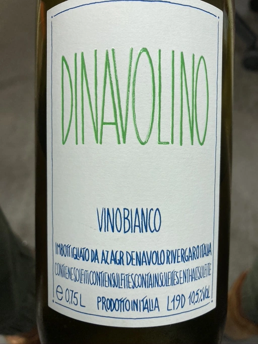

- Type
- White Still, Dry
- Producer
- Denavolo
- Vintage
- 2019
- Location
- Italy, IGP Emilia
- Grapes
- Ortrugo, Marsanne, Malvasia di Candia Aromatica
- Alcohol
- 10.5
- Sugar
- 1
- Price
- 590 UAH
- Cellar
- N/A
Producer
When Giulio Armani is not busy with La Stoppa, he produces his own wine - Denavolo (macerated for 6 months), Denavolino (similar to Denavolo, but grapes are from lower altitude) and Catavela (macerated from 7 days). His wines are comparable to famous La Stoppa Ageno 2015.
Ratings
2020-09-17 - 5.00
Not ready yet. Some citrus and apples notes that you can get only by digging through thick reductive layer. Situation doesn’t get better via decanting. Nice tannins, but acidity is out of place. I guess, 2019 is too young. Though Dinavolino 2018 is also not ready, so maybe in few years it will be in shape.